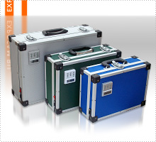
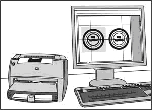
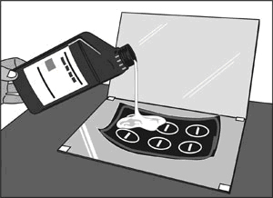
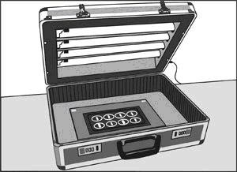
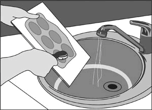
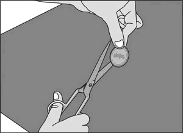

Главная / Экспонирующие камеры |
Модели экспонирующих камер: |
|


Эскиз будущей печати (новой или восстанавливаемой по оттиску)
отрисовывается на копьютере и печатается на матовой плёнке 
Изображение обкладывается бордюрной лентой.
В полученную форму заливается жидкий фотополимер.
Получившаяся композиция накрывается прозрачной плёнкой и
зажимается между двумя стёклами. 
Кассета помещается в экспонирующую камеру для засветки. 
По окончании засветки кассета разбирается. Композиция промывается в воде.  Клише вырезается, сушится и наклеивается на оснастку. Печать готова |
';
require_once "templates/medium.txt";
echo ' '; require_once "templates/work.txt"; echo ' '; require_once "templates/fly3.txt"; ?> |
|||||